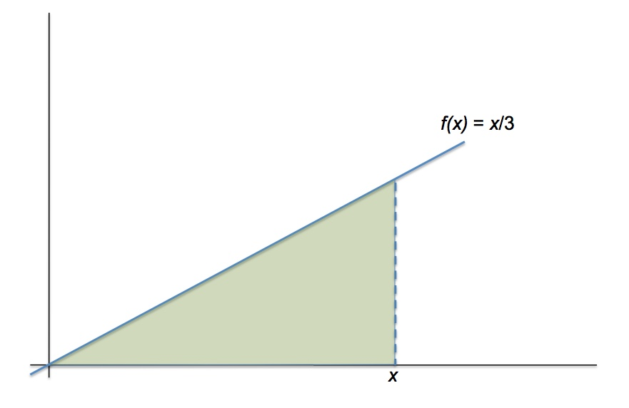
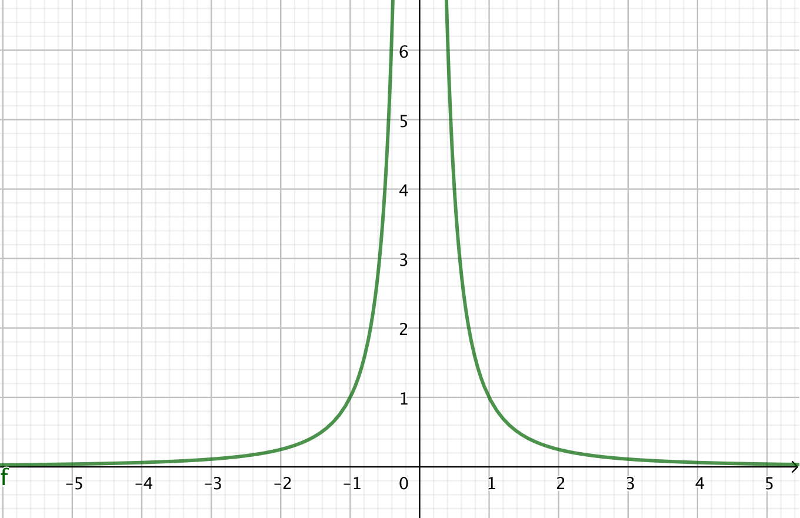
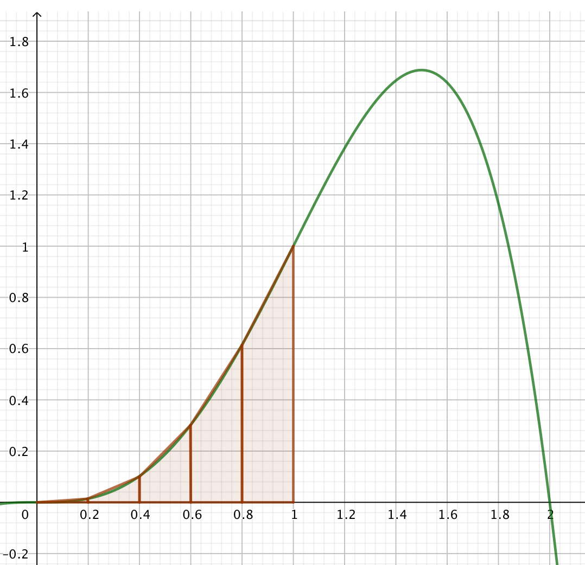

Capítulo 11 Cálculo de primitivas
En el apartado 8.8 definimos integral de la función \(f(x)\) como el área bajo la curva de esta función. Y vimos en el apartado 8.9 que si \(F(x)\) es la función del área bajo la curva desde un punto inicial hasta \(x\), entonces \(F^\prime(x) = f(x)\). A esto lo llamamos el Teorema Fundamental del Cálculo.
También vimos que la integral se puede usar para mucho más que para calcular areas. En nuestro ejemplo de partida lo usamos para calcular distancias recorridas apartir de la velocidad. Posiblemente el cálculo de areas es una utilidad menor. Las integrales se usan primordialmente para calcular energías, voltajes, masas, temperaturas, dinero, probabilidades… Cualquier cosa que podamos establecer como una suma de muchas (infinitas) cantidades pequeñas. El cálculo de áreas bajo la curva es la abstracción que usan las matemáticas de todos estos problemas más concretos: nos olvidamos de la energías, voltajes, etc, y nos concentramos en una función \(f(x)\) y su área.
11.1 Regla de Barrow
Hay un primer problema que nos encontramos, que por suerte tiene una solución simple: hemos dicho que \(F(x)\) nos da el área dede una cierta posición inicial. ¿Qué posición inicial es esa? Porque para diferentes posiciones iniciales la función será diferente. Resolvamos este primer problema en un ejemplo concreto.
Supongamos que nuestra función es una recta, por ejemplo \(f(x) = x/3\) y que nuestra posición inicial es \(x = 0\).

El área a calcular es un triángulo, de base \(x\) y de altura \(f(x) = x/3\), luego la función, que llamaremos \(F_0(x)\), es el área del triángulo desde 0 hasta \(x\): \[F(x) = \frac{1}{2} x \frac{x}{3} = \frac{x^2}{6}\] Nótese que, como debía pasar, \(F_0^\prime(x) = f(x)\). Si nos interesa el área bajo la curva entre el punto \(x = 0\) y \(x = 5\), lo calculamos con facilidad: \(F(5) = \frac{5^2}{6} = 4.1667\).
Pero digamos que no queremos en área entre \(x = 0\) y \(x = 5\), sino que queremos empezar en \(x = 3\), es decir, queremos el área entre \(x = 3\) y \(x = 5\). La solución es simple: el área entre \(x = 3\) y \(x = 5\) es el área entre \(x = 0\) y \(x = 5\) menos el área entre \(x = 0\) y \(x = 3\):
Luego el área que nos interesa es
\[F(5) - F(3) = \frac{5^2}{6} - \frac{3^2}{6} = \frac{16}{6} = 2.667\]
A esto se le llama la regla de Barrow:
\[\int_a^b f(x)dx = F(b) - F(a) \]
Otra manera de resolver este problema sería crear una nueva función, que podemos llamar \(F_3(x)\), que calcula el área, pero empezando en \(x=3\). Esta función es \[F_3(x) = F_0(x) - \frac{9}{6} = \frac{x^2}{6} - 1.5\] Vemos que la derivada de \(F_3(x)\) también es \(f(x)\).
Observamos que al integrar la función \(f(x)\) no hay una única función \(F(x),\) sino toda una familia de funciones que tienen la forma \(F(x) + C\). A la función \(F(x)\) se le llama la primitiva de \(f(x)\) y a \(C\), la constante de integración.
La forma de representar el cálculo de una primitiva es \[\int f(x)dx\] sin límites superior e inferior en el símbolo de la integral. A esto se le llama también una integral indefinida y el resultado es una función: la primitiva. En cambio, si ponemos los límites de integración: \[\int_a^b f(x)dx\] recibe el nombre de integral definida y el resultado es, en general, un número.
Para calcular la derivada de una función \(f(x)\) teníamos que calcular un límite, lo cual es relativamente simple. Pero para calcular la integral de una función tenemos que calcular una suma (infinita) y esto, salvo casos muy simples, no los sabemos hacer. Por lo tanto lo que se hace es buscar una función \(F(x)\) tal que su derivada es \(f(x)\). Eso es a menudo posible, pero en general no es fácil.
Por suerte hay algunas técnicas que no son excesivamente complicadas y que nos permitirá calcular la mayoría de las integrales que suelen aparecer en la práctica. El objetivo de este capítulo es dominar estas técnicas para así poder calcular con agilidad integrales simples y de complejidad media.
11.2 Técnica 1: Cuadro de primitivas elementales
La primera técnica es el punto de partida de todas las demás. Es muy simple, pero aburrida y con poco glamour: consiste en saberse de memoria unas cuantas primitivas elementales. No es simplemente saberlas, hay que dominarlas. La diferencia entre saber y dominar es esta: cuando uno simplemente sabe algo, tiene que activamente buscar la solución, pero cuando lo domina, la solución le “salta” a la mente. Cuando uno mira una integral y de repente “ve” que hay que hacerla por partes, es porque domina las primitivas elementales. Este dominio se consigue de un única manera. con la práctica.
Dominar la tabla es muy fácil: repetición, repetición, repetición, práctica, práctica, práctica. Sí, es un proceso árido. Pero para llegar al oasis, primero hay que pasar por el desierto.
No hay una lista oficial de primitivas elementales, pero con la docena que hay en el cuadro siguiente, tenemos lo suficiente para resolver la mayoría de las integrales que salen habitualmente.
| \(f(x)\) | \(F(x)\) |
|---|---|
| \(\int dx\) | \(x\) + C |
| \(\int x^{n} dx\) | \(\frac{x^{n+1}}{n+1}\) + C |
| \(\int \frac{dx}{\sqrt{x}}\) | \(2\sqrt{x}\) + C |
| \(\int a^x dx\) | \(\frac{a^x}{\log(a)}\) + C |
| \(\int e^x dx\) | \(e^x\) + C |
| \(\int \frac{dx}{x}\) | \(\log(|x|)\) + C |
| \(\int \sin(x) dx\) | \(-\cos(x)\) + C |
| \(\int \cos(x) dx\) | \(\sin(x)\) + C |
| \(\int \tan(x) dx\) | \(-\log(|\cos(x)|)\) + C |
| \(\int \frac{dx}{\cos^2(x)}\) | \(\tan(x)\) + C |
| \(\int \frac{dx}{\sqrt{1 - x^2}}\) | \(\arcsin(x)\) + C |
| \(\int \frac{dx}{1 + x^2}\) | \(\arctan(x)\) + C |
Como en el caso de las derivadas, la \(n\) de \(x^n\) no tiene por qué ser un entero. Por lo tanto, aunque no aparezca explícitamente, tenemos en el cuadro la primitiva de \(\sqrt{x} = x^{1/2}\).
Hemos añadido la constante de integración en todas las primitivas elementales. Ya hemos visto que a la hora de calcular integrales definidas la constante de integración no se usa. Hay que recordar que está ahí, pero para simplificar la notación, no la añadiremos más.
11.3 Técnica 2: Tres teoremas básicos
Muy a menudo las funciones a integrar no tienen exactamente la forma del cuadro de primitivas elementales y hay que manipularlas un poco. Para esto tenemos estos tres teoremas. Si recordamos que una integral es la supericie bajo la curva, son casi evidentes y no vamos a demostrar su veracidad. Sólo demostraremos su uso.
Ejemplo 11.1 Calcula \(\int 3 \cos (x) dx\).
La solución en este caso es muy simple: \[\int 3 \cos (x) dx = 3\int \cos (x) dx = 3 \sin(x)\]Ejemplo 11.2 Calcula \(\int \frac{dx}{\sqrt{6x}}\).
La solución en este caso es un poco menos obvia: \[\int \frac{dx}{\sqrt{6x}} = \int \frac{dx}{\sqrt{6}\sqrt{x}} = \int \frac{1}{\sqrt{6}}\frac{dx}{\sqrt{x}} = \frac{1}{\sqrt{6}} \int\frac{dx}{\sqrt{x}} = \frac{1}{\sqrt{6}}\, 2\sqrt{x}\]El segundo teorema nos permite tratar la suma y resta de funciones.
Ejemplo 11.3 Calcula \(\int (\frac{1}{x} + 3e^x) dx\).
Este ejemplo es otra vez muy simple: \[\int (\frac{1}{x} + 3e^x) dx = \int \frac{1}{x}dx + \int 3e^x dx = \log(|x|) + 3 e^x \]Ejemplo 11.4 Calcula \(\int \frac{x+5}{x^2} dx\).
Necesitamos una simple manipulación algebraica: \[\int \frac{x+5}{x^2} dx = \int (\frac{x}{x^2} + \frac{5}{x^2}) dx = \int (\frac{1}{x} + \frac{5}{x^2}) dx = \log(|x|) + 5 \frac{x^3}{3}\]Este tercer teorema no es realmente de cálculo de primitivas, sino de cálculo de integrales definidas. Debe aplicarse cuando la función está definida a trozos, o cuando en algún punto tenemos una discontinuidad o la función no es derivable.
Ejemplo 11.5 Calcula \(\int_{-3}^1 |x| dx\).
En el punto \(x=0\) la función no es derivable, y debemos dividir nuestra integral en dos:
\[\int_{-3}^1 |x| dx = \int_{-3}^0 -x\, dx \int_0^1 x\, dx = \left.\frac{-x^2}{2}\right|_{-3}^0 + \left.\frac{x^2}{2}\right|_0^1 = \left(0 - \frac{-9}{2}\right) + \left(\frac{1}{2} - 0\right) = 5\]11.4 Técnica 3: Cambio de variable
Cuando derivábamos, partíamos de las derivadas elementales, por ejemplo, derivada de \(\sin(x)\) es \(\cos(x)\), y sabíamos que si lo que había en el paréntesis no era \(x\) sino alguna expresión más compleja, que llamábamos \(u\), teníamos que aplicar la regla de la cadena: la derivada de \(\sin(u)\) es \(u^\prime\cos(u)\).
En el mundo de las integrales, esta misma idea la llevamos a cabo mediante la técnica del cambio de variable.
Digamos que queremos calcular \(\int \cos(3x+1) dx\). Conocemos la primitiva elemental de \(\cos(x)\), pero lo que tenemos dentro del paréntesis no es \(x\), sino \(3x +1\). Hacemos el cambio de variable \(u = 3x +1\) y así tenemos \(\cos(u)\). En el caso de las integrales tenemos un problema adicional: si la variable es \(u\) no podemos tener \(dx\) sino que tenemos que tener \(du\). Esto se arregla derivando la función \(u = 3x + 1\):
\[\frac{du}{dx} = \frac{d(3x+1)}{dx} = 3. \] Despejando el \(dx\) nos queda \[dx = \frac{1}{3}\, du.\]
Entonces nuestra integral queda \[\int \cos(3x+1) dx = \int \frac{1}{3}\cos(u) du = \frac{1}{3}\sin(u)\] Y ahora hemos de deshacer el cambio: \[\int \cos(3x+1) dx = \frac{1}{3}\sin(3x + 1)\]
Con un poco de práctica estos casos tan simples se hacen de cabeza.
Veamos algunos ejemplos más.
Ejemplo 11.6 Calcula \(\int e^{-x/3} dx\).
Este es un caso muy similar al del coseno hecho antes. El cambio de variable es \(-x/3 = u\) lo que implica que \(dx = -3 du\). Y entonces nos queda
\[\int e^{-x/3} dx = \int -3 e^u du = -3 e^u \] Deshacemos el cambio de variable: \[\int e^{-x/3} dx = -3 e^u = -3 e^{-x/3}\]Este tipo de integrales aparecen a menudo y uno acaba reconvirtiendo la primitiva elemental a \(\int e^{ax} dx = \frac{1}{a} e^x\), \(\int \cos(ax) dx = \frac{1}{a}\sin(ax)\), etc.
Veamos algún caso un poco más complejo.
Ejemplo 11.7 Calcula \(\int \frac{3}{(x/2) - 1} dx\).
El 3 del numerador no nos molesta, lo podemos sacar fuera de la integral. Sabemos que \(\int \frac{dx}{x}\) es el logaritmo, luego hacemos el cambio de variable \(\frac{x}{2} - 1 = u\), lo que implica que \(dx = 2\,du\). Entonces nos queda \[\int \frac{3}{\frac{x}{2} - 1} dx = \int \frac{3}{u} 2\,du = 6\log(|u|). \] Deshaciendo el cambio de variable nos queda: \[\int \frac{3}{\frac{x}{2} - 1} dx = 6\log(|\frac{x}{2} - 1|). \]Ejemplo 11.8 Calcula \(\int x\sqrt{3x^2 -5}\, dx\).
Al ver esta integral es muy fácil que un novato se quede parado. No hay que desesperar, sino ir probando cosas. Hay una raíz cuadrada (o \(x^{1/2}\)) y nos sabemos la primitiva inmediata de \(x^n\) (si no se dominan las primitivas, es mucho más difícil ver esto). Probamos el cambio de variable \(u = 3x^2 -5\), lo que implica que \(du = 6x\, dx\). Tenemos un \(x\,dx\), y a partir de aquí todo es fácil: \[\int x\sqrt{3x^2 -5} \,dx = \int \frac{1}{6} u^{1/2}du = \frac{1}{6} \frac{2}{3}u^{3/2} \] Y ahora deshacemos el cambio de variable: \[\int x\sqrt{3x^2 -5}\, dx = \frac{1}{9} \sqrt{(3x^2 -5)^3}\]Vemos en este ejemplo que si en la función a integrar está una cosa y su derivada, el cambio de variable puede ser el camino.
Ejemplo 11.9 Calcula \(\int \frac{\log(x)}{x}\,dx\).
Si dominamos las derivadas, casi nos salta a la vista que tenemos una cosa (\(\log(x)\)) y su derivada (\(1/x\)). Esto nos sugiere el cambio de variable \(u = \log(x)\), quedando \(du = \frac{dx}{x}\):
\[\int \frac{\log(x)}{x}\,dx = \int u\, du = \frac{u^2}{2} = \frac{log^2(x)}{2} \]La técnica del cambio de variable permite resolver muchas más integrales, pero no todas, como vemos en el siguiente ejemplo.
Ejemplo 11.10 Calcula \(\int x^2 \cos(3x) \,dx\).
Probamos el cambio de variable \(3x = u\) lo que implica que \(dx = du\). Desgraciadamente tenemos un \(x^2\) que nos impide continuar. Ese cambio de variable no va a resolver esta integral.Esta integral es fácilmente resoluble, pero hemos de utilizar otra técnica: la integración por partes.
11.5 Técnica 4: Integración por partes
La integración por partes es un técnica muy útil y que proviene directamente de la derivada del producto. Recordamos que \[(f\cdot g)^\prime = f^\prime \cdot g + f\cdot g^\prime.\] De aquí: \[f\cdot g^\prime = (f\cdot g)^\prime - f^\prime \cdot g .\] Ahora integramos todo: \[\int f\cdot g^\prime dx = \int (f\cdot g)^\prime dx - \int f^\prime \cdot g\, dx = f\cdot g - \int f^\prime \cdot g\, dx.\]
Esta expresión normalmente se escribe como \[\int u \, dv = uv - \int v\, du\]
A primera vista parece que no hemos ganado mucho: pasamos de una integral, \(\int u \, dv\) a otra, \(\int v\, du\). Cuando la aprendí, me pareció una técnica “antipática”. Pero eso es porque no la entendí. Sospecho que el \(dv\) y \(du\) servían más para confundirme que otra cosa. En esta sección vamos a entender qué hace la integral por partes y después describiremos un método, el método DI, que ayuda utilizar con facilidad esta técnica.
En la integral se parte del producto de dos funciones, \(u\) y \(v\). Pasamos de \(\int u \, dv\) a \(\int v\, du\), eso quiere decir que hemos de saber integrar la función \(v\) (pasa de \(dv\) a \(v\)) y derivar la función \(u\) (pasa de \(u\) a \(du\)). Expliquemos su uso con un ejemplo.
Tenemos \(\int x \cos(x) \,dx\). Dejamos de lado el \(dx\) y vemos que tenemos dos funciones: \(x\) y \(\cos(x)\). Decidimos derivar \(x\) e integrar \(\cos(x)\), es decir, \(u = x\) y \(dv = \cos(x)\). La derivada de \(x\) es 1, y la primitiva de \(\cos(x) = \sin(x)\), es decir \(du = dx\) y \(v = \sin(x)\). Entonces nos queda \[\int x \cos(x) \,dx = x\, \sin(x) - \int \sin(x)\, dx\] Nos queda \(\int \sin(x)\, dx\), que es inmediata: \[\int x \cos(x) \,dx = x\, \sin(x) + \cos(x)\]
Esto lo podemos poner en forma tabular: \[\begin{array}{cccc} & D & & I\\ + & x & & \cos(x)\\ & & \searrow & \\ - & 1 & & \sin(x) \end{array}\]
La columna \(D\) es la función que vamos derivando, y la columna \(I\) es la que vamos integrando. Cada fila en \(D\) es la derivada de la anterior (1 es la derivada de \(x\)), y cada fila en \(I\) es la integral de la anterior ((x) es la primitiva de \(\cos(x)\). La diagonal (indicado con la flecha) representa el el producto \(uv\), mientras que la segunda fila es la integral \(-\int 1\cdot \sin(x)\, dx\). Los signos de la primera columna nos indica que es \(+uv\) y \(- \int v\, du\). Esta tabla DI nos ordena un poco lo que hemos hecho, pero no parece que sea de mucha ayuda. Pero si añadimos otra fila, derivando e integrando lo que tenemos en la segunda fila: \[\begin{array}{cccc} & D & & I\\ + & x & & \cos(x)\\ & & \searrow & \\ - & 1 & & \sin(x)\\ & & \searrow & \\ + & 0 & & -\cos(x)\\ \end{array}\] las dos diagonales nos dan los dos productos, y la tercera fila es la integral, que como es 0, no hay que hacer. Obtenemos el resultado directamente:
\[\int x \cos(x) \,dx = + x\, \sin(x) - 1\cdot (- \cos(x)) = x\, \sin(x) + \cos(x)\]
No he explicado por qué he decidido integrar \(\cos(x)\) y derivar \(x\). Podíamos haberlo escogido al revés. Vamos a crear la tabla DI con esta otra elección (ya sin las flechas) y ver qué pasa:
\[\begin{array}{ccc} & D & I\\ + & \cos(x) & x\\ - & -\sin(x) & \frac{x^2}{2}\\ + & -\cos(x) & \frac{x^3}{6}\\ \end{array}\]
Vemos que con esta elección cada fila es más complicada que la anterior y no llegamos a ninguna parte.
Vamos a ver 3 ejemplos de integración con el método DI, cada uno con sus características propias.
Ejemplo 11.11 Calcula \(\int 5 x^2 \sin(3x) dx\).
Este es una función similar a la vista. Vamos a derivar \(x^2\) y a integrar \(\sin(3x)\). No es una integral inmediata, pero casi. Creamos la tabla DI:
\[\begin{array}{ccc} & D & I\\ + & x^2 & \sin(3x)\\ - & 2x & -\frac{1}{3}\cos(3x)\\ + & 2 & -\frac{1}{9}\sin(3x)\\ - & 0 & \frac{1}{27}\cos(3x) \end{array} \] Paramos porque hemos obtenido un 0 en la columna \(D\) y ya tenemos nuestra integral multiplicando las diagonales con su signo (sin olvidarnos del 5): \[\int 5 x^2 \sin(3x) dx = 5 (- x^2 \frac{1}{3}\cos(3x) + 2x \frac{1}{9}\sin(3x) + 2 \frac{1}{27}\cos(3x))\]En este caso hemos parado cuando hemos obtenido un 0 en la fila \(D\). Esto no pasa siempre. Veamos un caso en el que tenemos otra condición de parada diferente.
Ejemplo 11.12 Calcula \(\int x^2 \log(x) dx\).
Como no sabemos (todavía) integrar \(\log(x)\), vamos a integrar \(x^2\) y derivar \(\log(x)\). Creamos la tabla DI: \[\begin{array}{ccc} & D & I\\ + & \log(x) & x^2\\ - & \frac{1}{x} & \frac{x^3}{3} \end{array} \]
Recordamos que cada fila representa a una integral. Sabemos integrar la segunda fila, luego podemos parar aquí. Nos queda: \[\begin{align} \int x^2 \log(x) dx & = \log(x) \frac{x^3}{3} -\int \frac{1}{x} \frac{x^3}{3} \,dx \\ &= \frac{x^3\log(x)}{3} - \frac{1}{3}\int{x^2}\, dx \\ &= \frac{x^3\log(x)}{3} - \frac{x^3}{9} \end{align}\]La parada en esta caso la hemos hecho cuando hemos obtenido una fila que sabíamos integrar. Veamos una tercera condición de parada.
Ejemplo 11.13 Calcula \(\int e^{2x} \cos(x) dx\).
Vamos a integrar \(e^{2x}\) y derivar \(\cos(x)\) (probad a hacerlo al revés). La tabla DI queda: \[\begin{array}{ccc} & D & I\\ + & \cos(x) & e^{2x} \\ - & -\sin(x) & \frac{1}{2}e^{2x} \\ + & -\cos(x) & \frac{1}{4}e^{2x} \end{array} \] Vemos que la última fila es, salvo constantes y signos, igual que la primera. Esto quiere decir que hemos vuelto a llegar al punto de partida. Eso es bueno: \[\int e^{2x} \cos(x) dx = \cos(x)\frac{1}{2}e^{2x} - (-\sin(x))\frac{1}{4}e^{2x} + \int -\frac{1}{4}e^{2x}\cos(x) dx \] Pasamos la integral al otro lado: \[\int e^{2x} \cos(x) dx + \frac{1}{4}\int e^{2x} \cos(x) dx = \frac{\cos(x)e^{2x}}{2} + \frac{\sin(x) e^{2x}}{4}\] Despejamos la integral, arreglamos un poco y nos queda: \[\int e^{2x} \cos(x) dx = \frac{4}{5} \frac{e^{2x}}{2} \left(\cos(x) + \frac{1}{2}\sin(x)\right) \]Para resolver una integral por partes usando el método DI debemos:
- Escoger qué vamos a integrar y qué vamos a derivar
- Crear la tabla DI, con signos alternados, derivando una columna e integrando la otra
- Paramos cuando se dé una de estas tres condiciones
- Tenemos un 0 en la columna D
- Sabemos integrar la fila
- La fila es igual, salvo signo o constantes, a una fila anterior
- A partir de las diagonales y, si es necesario, la integral de la última fila, resolvemos la integral de partida.
Si nunca se da ninguna de las condiciones de parada es que esta integral no se resuelve por partes, al menos no con la elección que hemos hecho de lo que vamos a derivar y lo que vamos a integrar.
Para acabar, vamos a integrar por partes algo que parece que no es un producto de dos funciones.
Ejemplo 11.14 Calcula \(\int \log(x) dx\).
Aunque parece que sólo hay una función, tenemos dos: \(\log(x)\) y \(1\). Vamos a derivar \(\log(x)\) y a integrar el 1. Nos queda: \[\int \log(x) dx = x \log(x) - \int x \frac{1}{x}\, dx = x \log(x) - x\]Con las técnicas vistas hasta ahora podemos resolver la mayoría de las integrales que nos aparecen. Veamos una última técnica para resolver cierto tipo de integrales que aparecen mucho en ingeniería: las funciones racionales.
11.6 Técnica 5: Integración de funciones racionales
Una función racional es una función que es el cociente de dos polinomios, por ejemplo \[f(x) = \frac{P(x)}{Q(x)} = \frac{3x^2 + 2}{x^3 - 4x^2 - 7x + 10}.\] Integrar estas funciones tiene una parte algebraica, que es fácil, pero larga y pesada, y después la parte de cálculo que es simple. Pasaremos rápidamente por la parte algebraica, y nos detendremos un poco más en la parte de cálculo.
11.6.1 Descomposición en fracciones simples
Para poder integrar una función racional hemos de descomponer como una suma de fracciones simples, fracciones cuyo denominador son de la forma \(1\) (es decir, sin denominador), \((x-a)\), \((x-a)^n\) para algún entero \(n\) o un polinomio cuadrático \(x^2 + bx + c\) sin raíces reales. Esto siempre es posible. Es un proceso pesado, pero sin trampas.
En nuestro ejemplo el grado del numerador \(P(x)\), es menor que el del denominador \(Q(x)\). Vamos a empezar por este caso. Lo primero que tenemos que hacer es encontrar las raíces de \(Q(x)\). Eso puede ser fácil algunas veces y difícil otras. En este caso tiene 3 raíces reales, \(x = -2\), \(x = 1\) y \(x = 5\). Esto quiere decir que \(Q(x) = (x+2)(x-1)(x-5)\). Sabiendo las raíces, podemos escribir nuestra función como \[\frac{3x^2 + 2}{x^3 - 4x^2 - 7x + 10} = \frac{A}{x+2} + \frac{B}{x-1}+\frac{C}{x-5}\] y es cuestión de encontrar los valores de \(A\), \(B\) y \(C\). Para ello juntamos la suma de las tres fracciones en una: \[\frac{A}{x+2} + \frac{B}{x-1}+\frac{C}{x-5} = \frac{A(x-1)(x-5) + B(x+2)(x-5) + C(x+2)(x-1)}{(x+2)(x-1)(x-5)}\] Luego \[\frac{3x^2 + 2}{x^3 - 4x^2 - 7x + 10} = \frac{A(x-1)(x-5) + B(x+2)(x-5) + C(x+2)(x-1)}{(x+2)(x-1)(x-5)}\]
Los dos denominadores son iguales, luego los dos numeradores deben serlo también. Desarrollamos el numerador e igualamos. Esto nos da lugar a un sistema de ecuaciones cuya solución es \[A = \frac{2}{3}; \qquad B = \frac{-5}{12}; \qquad C = \frac{11}{4}.\] (En este caso hay un método más simple que resolver el sistema, pero no lo explico).
Luego tras descomponer nuestra función racional en fracciones simples tenemos que \[\frac{3x^2 + 2}{x^3 - 4x^2 - 7x + 10} = \frac{1/3}{x+2} - \frac{5/12}{x-1}+\frac{11/4}{x-5}\] Y esta expresión es la que veremos cómo se integra.
En el caso general podemos tener raíces simples, como las que hemos visto en el ejemplo anterior, raíces múltiples de la forma \((x-a)^n\) y polinomios de segundo grado sin raíces reales. Supongamos que nuestro denominador \(Q(x)\) tiene una raíz simple en \(x = 2\), una de multiplicidad 3 en \(x = -1\) y una ecuación de segundo grado sin raíces reales \(x^2 -4x+5\). Esto quiere decir que podemos escribir \(Q(x)\) como \((x-2)(x+1)^3(x^2 -4x+5)\). Entonces la descomposición de fraciones simples tiene la forma \[\frac{P(x)}{Q(x)} = \frac{A}{x-2} + \frac{B_1}{x+1} + \frac{B_2}{(x+1)^2} + \frac{B_3}{(x+1)^3} + \frac{Mx + N}{x^2 -4x+5}\] Para hallar los coeficientes juntamos todo en una única fracción, desarrollamos el numerador y lo igualamos a \(P(x)\). Esto nos da un sistema de 6 ecuaciones con 6 incógnitas, que resolvemos y obtenemos \(A, B_1, B_2, B_3, M\) y \(N.\) Largo y tedioso, pero no difícil.
Es importante saber cómo hacer esta descomposición, pero después dejaremos estas tareas tediosas, y que consumen mucho tiempo, al ordenador.
Hemos exigido que el grado del denominador sea estrictamente menor que el del numerador. ¿Qué hacemos si es mayor? En este caso hay que dividir los polinomios.
Supongamos que tenemos la función racional \[f(x) = \frac{x^4 + 3x^2 + x - 1}{x^3 + 2x^2}.\] Esto lo queremos poner de la forma \[D(x) + \frac{P(x)}{x^3 + 2x^2}.\] Como el denominador es de grado 3 y \(P(x)\) debe tener menor grado que el denominador, debe ser de grado 2. Como \(D(x)\cdot (x^3 + 2x^2)\) debe tener el mismo grado que el numerador original, entonces \(D(x)\) debe ser de grado 1. Luego nos queda la ecuación \[\frac{x^4 + 3x^2 + x - 1}{x^3 + 2x^2} = A_1x + A_0 + \frac{B_2x^2 + B_1x + B_0}{x^3 + 2x^2}.\] Recomponemos en una fracción la parte de la derecha y queda \[\frac{x^4 + 3x^2 + x - 1}{x^3 + 2x^2} = \frac{(A_1x + A_0)(x^3 + 2x^2) + (B_2x^2 + B_1x + B_0)}{x^3 + 2x^2}.\] Desarrollamos, igualamos los polinomios de los numeradores y resolvemos el sistema de ecuaciones. Nos queda que \[\frac{x^4 + 3x^2 + x - 1}{x^3 + 2x^2} = x -2 + \frac{7x^2 + x - 1}{x^3 + 2x^2}.\]
Y ahora estamos preparados para descomponer la segunda parte en fracciones simples.
11.6.2 Integración de las fracciones simples
Una vez hecha la parte algebraica, integrar es fácil. Nos quedan 3 tipos de fracciones que debemos integrar. Dos son inmediatas.
Ejemplo 11.15 Calcula \(\int \frac{A}{x-a} dx\).
Se puede hacer el cambio de variable \(u = x-a\), pero realmente ya deberíamos ver a simple vista que la solución es \[\int \frac{A}{x-a} dx = A \log(|x-a|) \]Ejemplo 11.16 Calcula \(\int \frac{A}{(x-a)^n} dx\).
Quizá se ve mejor si reescribimos la integral como \(\int A(x-a)^{-n} dx\). Se puede hacer el cambio de variable \(u = x-a\), pero, otra vez, deberíamos ver a simple vista que la solución es \[\int \frac{A}{(x-a)^n} dx = \frac{-A}{(n-1)(x-a)^{n-1}} \]El tercer tipo de fracción es un poco más complicada.
Queremos calcular \(\int \frac{Mx + N}{(x^2 + bx + c)} dx\).
Hemos supuesto que el término en \(x^2\) tiene coeficiente 1. Si es otra cosa, es cuestión de multiplicar o dividir por una constante, lo que sea más fácil.
También hemos supuesto que este polinomio no tiene raíces reales. Esto quiere decir que el discriminante \(b^2 - 4c\) es negativo. En este caso, podemos reescribir el polinomio como \[\left(x- \frac{b}{2}\right)^2 + \frac{4c - b^2}{4}.\] Como nos estamos quedando sin letras, aunque sea un poco confuso, lo escribiremos como \((x-a)^2 + b\).
Pueden comprobar efectivamente que \[x^2 + 2x + 4 = \left(x + \frac{2}{2}\right)^2 + \frac{4\cdot 4 - 2^2}{4} = (x+1)^2 + 3.\]
Hemos de distinguir entre dos casos. El primer caso es que al resover el sistema de ecuaciones hemos obtenido \(M = 0\), es decir, que nuestra fracción simple es del tipo \[\frac{N}{(x-a)^2 + b}.\] Si miramos la lista de primitivas inmediatas se parece a la del arctan(x). Necesitamos un 1 en el denominador en el lugar de la \(b\). Para ello dividimos todo por \(b\). Nos queda: \[\frac{N}{b} \int \frac{1}{\left(\frac{x-a}{\sqrt{b}}\right)^2 + 1} \,dx\] El cambio de variable que necesitamos es \[ u = \frac{x-a}{\sqrt{b}}\] y tenemos que \(dx = \sqrt{b}\,du\). La integral queda \[\frac{N}{b} \int \frac{\sqrt{b}}{u^2 + 1}\,du.\] Y esta ya es inmediata. Resolviendo y deshaciendo el cambio de variable nos queda \[\int \frac{N}{(x-a)^2 + b}\,dx = \frac{N}{\sqrt{b}} \arctan\left(\frac{x-a}{\sqrt{b}}\right).\]
El segundo caso es cuando \(M ≠ 0\). Tenemos \[\int \frac{Mx + N}{(x-a)^2 + b}\,dx\] Queremos hacer el cambio de variable \((x-a)^2 + b = u\). Más adelante se entenderá el porqué de este cambio de variable. Este cambio da lugar a \(2(x-a)dx = du\). Luego queremos un 2 multiplicando en el numerador a la \(x\). Eso es fácil: \[\frac{2}{M} \int \frac{2x + \frac{2N}{M}}{(x-a)^2 + b}\,dx\] Como queremos un \(2(x-a) = 2x - 2a\) en el numerador, sumamos y restamos \(2a\): \[\frac{2}{M} \int \frac{2x - 2a + \frac{2N}{M} +2a}{(x-a)^2 + b}\,dx\] Y ahora dividimos la integral en 2: \[\frac{2}{M} \int \frac{2x - 2a}{(x-a)^2 + b}\,dx + \frac{2}{M} \int \frac{\frac{2N}{M} +2a}{(x-a)^2 + b}\,dx\]
La segunda integral es la del \(\arctan\) que acabamos de hacer. Vayamos con la primera. Hacemos el cambio de variable: \[\frac{2}{M} \int \frac{2x - 2a}{(x-a)^2 + b}\,dx = \frac{2}{M} \int \frac{du}{u}.\] Ahora se entiende el cambio de variable: esto es un logaritmo: \[\frac{2}{M} \int \frac{du}{u} = \frac{2}{M} \log(|u|).\] Deshacemos el cambio de variable: \[\frac{2}{M} \int \frac{2x - 2a}{(x-a)^2 + b}\,dx = \frac{2}{M} \log(|(x-a)^2 +b|)\]
Vemos que integrar funciones racionales es un proceso sin misterios, pero que puede ser largo y tedioso. A veces muy largo y muy tedioso. Pero en algunas áreas estas integrales son muy habituales y hay que saber hacerlas (aunque luego se las “encarguemos” al ordenador).
Acabemos con un último ejemplo.
Ejemplo 11.17 Calcula \[\int \frac{3x^3 - 3x^2 + 16x -17}{x^4 - 2x^3 + x^2 + 12x +8} \, dx\]
Probando vemos que tiene una raíz en \(x = 1\) (que resulta ser doble), y no tiene más raíces reales. Podemos escribir la función como \[\frac{A_1}{x+1} + \frac{A_1}{(x+1)^2} + \frac{Mx + N}{x^2 - 4x + 8}\]
Encontramos los valores de los coeficientes y nos queda:
\[\frac{1}{x+1} - \frac{3}{(x+1)^2} + \frac{2x -1}{(x-2)^2 +4}\]
Las primera integral es inmediata:
\[\int \frac{dx}{x+1} = \log(|x+1|)\]
y la segunda también:
\[\int \frac{-3}{(x+1)^2}\,dx = \frac{3}{x+1}\]
Vamos a arreglar la tercera. Queremos hacer el cambio de variable \(u = (x-2)^2 +4\). Esto nos deja \(du = (2x - 4)\, dx\). Arreglamos el numerador:
\[\int \frac{2x -1}{(x-2)^2 +4}\, dx = \int \frac{2x -4 + 3}{(x-2)^2 +4}\, dx\]
Y ahora dividimos en dos y resolvemos cada integral por separado. Empecemos con la primera: \[\int \frac{2x -4}{(x-2)^2 +4}\, dx.\]
Hacemos el cambio de variable \(u = (x-2)^2 +4\) y resolvemos \[\int \frac{2x -4}{(x-2)^2 +4}\, dx = \int \frac{du}{u} = \log(|u|) = \log((x-2)^2 +4)\] (Podemos olvidarnos del valor absoluto, pues es siempre positivo).
Vamos con la segunda integral: \[\int \frac{3}{(x-2)^2 +4}\, dx\]
Hemos de arreglarlo para tener un 1 en el numerador y que se sume 1 en el denominador: \[\frac{3}{4}\int \frac{dx}{\left(\frac{x-2}{2}\right)^2 + 1}\]
Hacemos el cambio de variable \(u = \frac{x-2}{2}\) lo que implica que \(dx = 2\,du\). Sacamos de la integral (y simplificamos) el 2 que ha aparecido en el numerador y queda: \[\frac{3}{2}\int \frac{du}{u^2 + 1}\] Y ahora es inmediata \[\frac{3}{2}\int \frac{du}{u^2 + 1} = \frac{3}{2}\arctan(u) = \frac{3}{2}\arctan\left(\frac{x-2}{2}\right)\]
Juntamos todo:
\[\begin{array}{l} \int \frac{3x^3 - 3x^2 + 16x -17}{x^4 - 2x^3 + x^2 + 12x +8} \, dx = \\ \qquad \log(|x+1|) + \frac{3}{x+1} + \log((x-2)^2 +4) + \frac{3}{2}\arctan\left(\frac{x-2}{2}\right)\end{array}\]11.7 Integrales impropias
Hemos supuesto hasta ahora, aunque no lo hemos dicho explícitamente, que la función a integrar es continua en todo \([a, b]\) y que este intervalo \([a, b]\) es finito. Pero imaginemos que quiero calcular \(\int_{-1}^{1} \frac{1}{x^2} \,dx\), que tiene una discontinuidad en \(x = 0\) o que quiero calcular \(\int_0^\infty e^{-x} dx\). Estas integrales aparecen en problemas reales y las áreas que estamos calculando puedes ser finitas. A este tipo de integrales se les llaman integrales impropias.
Empecemos por la integral \(\int_{-1}^{1} \frac{1}{x^2} \,dx\).

Aunque tenemos esa discontinuidad en \(x=0\) podría ser que el área bajo la curva fuera finita. Como claramente la función es simétrica alrededor del eje Y, vamos a calcular sólo \(\int_{0}^{1} \frac{1}{x^2} \,dx\). No podemos calcular la primitiva y aplicar la regla de Barrow, pues habría que evaluar la función en un punto en el que no existe. ¿Qué podríamos hacer? La solución es la misma que ya hemos aplicado otras veces: coger un punto \(\varepsilon\), positivo, cercano a 0, calcular la integral entre \(\varepsilon\) y 1, y después calcular el límite cuando \(\varepsilon\) tiende a 0. Hagámoslo:
\[\int_\varepsilon^ 1 \frac{1}{x^2}\, dx = \left. -\frac{1}{x}\right|_\varepsilon^1 = -\frac{1}{1}+\frac{1}{\varepsilon} = \frac{1-\varepsilon}{\varepsilon}\]
Y ahora calculamos el límite: \[\lim_{\varepsilon \to 0^+}\frac{1-\varepsilon}{\varepsilon} = \infty\]
Esta integral no existe (el área es infinita).
Uno podría pensar que siempre que la función tiende a \(\infty\), el área también lo va a hacer. Pero no es así.
Ejemplo 11.18 Calcula \[\int_0^2 \frac{1}{\sqrt{4-x^2}} \, dx.\]
Tenemos una discontinuidad en \(x=2\), luego escogemos un valor \(\varepsilon\) menor que 2, calculamos la integral entre 0 y \(\varepsilon\), y después el límite cuando \(\varepsilon\) tiende a 2.
La integral es, casi, una de nuestra lista de inmediatas.
\[\int_0^\varepsilon \frac{1}{\sqrt{4-x^2}} \, dx = \left.\arcsin\left(\frac{x}{2}\right)\right|_0^\varepsilon = \arcsin\left(\frac{\varepsilon}{2}\right) - \arcsin(0) = \arcsin\left(\frac{\varepsilon}{2}\right)\]
Y ahora \[\lim_{\varepsilon \to 2^-}\arcsin\left(\frac{\varepsilon}{2}\right) = \arcsin(1) = \frac{\pi}{2}\]Ahora vamos con el caso de que uno de los extremos de la integral es \(\infty\). Calculemos \(\int_0^\infty e^{-x} \,dx.\)
Vamos a calcular la integral entre 0 y \(t\) y después hacemos que \(t\) tienda a infinito:
\[\int_0^t e^{-x} \,dx = \left.-e^{-x}\right|_0^t = -e^{-t} + e^0 = 1 - e^{-t}\]
Ahora hacemos el límite cuando \(t\) tiende a \(\infty\):
\[\lim_{t \to \infty}(1 - e^{-t}) = 1 - 0 = 1\]
11.8 Integración numérica
Como hemos visto, encontrar la primitiva de una función puede ser muy difícil, a veces casi imposible. Pero si tengo una función, aunque no tenga la primitiva, puedo calcular aproximadamente el área bajo la curva. Es lo que se llama integración numérica.
La idea básica es la misma que ya vimos al definir integral en el apartado 8.8: aproximar el área bajo la curva mediante figuras geométricas de las que sé calcular el área. No podemos hacer el límite, luego no podremos saber el valor exacto, pero a base de aumentar el número figuras, que serán cada vez más pequeñas, puedo aproximarme al valor real tanto como quiera. Cuando había que hacer los cálculos a mano, no era una solución maravillosa: casi te costaba menos seguir buscando la primitiva. Pero ahora hay ordenadores.
En el apartado 8.5 usamos rectángulos para aproximar el área. Era el caso más simple de explicar y no íbamos a hacer los cálculos. Pero hay maneras mejores, que nos aproximan el área de forma más eficiente y con menos cálculos. Veámos la aproximación por rectángulos y otras dos que en general aproximan mejor y con menos trabajo.
11.8.1 Aproximación por rectángulos
Tenemos una función \(f(x)\) y queremos calcular numérricamente la integral definida \(\int_a^b f(x) \, dx\). Lo primero que se nos puede ocurrir es aproximar el área mediante rectángulos:

Para ello partimos el intervalo \([a, b]\) en \(N\) partes iguales. Vamos a llamar a los puntos de esta partición \(x_0, x_1, \dots, x_{n-1}, x_n\). Naturlamente \(x_0 = a\) y \(x_n = b\). La distancia entre estos puntos es \(h = (b-a)/N\). Por lo tanto \(x_1 = x_0 + h\), \(x_2= x_0 + 2h\) y en general \(x_i = x_0 + i\cdot h\).
La superficie de cada rectángulo es \(f(x_i)\cdot h\). La suma de todos los rectángulos nos aproxima la integral:
\[\int_a^b f(x) \, dx \approx f(x_0)\cdot h + f(x_1)\cdot h + f(x_2)\cdot h + \cdots + f(x_{n-1})\cdot h \]
(El símbolo “\(\approx\)” significa “es aproximadamente igual”).
Sacamos \(h\) factor común y lo expresamos como un sumatorio: \[\int_a^b f(x) \, dx \approx h\sum_{i = 0}^{n-1} f(x_0+i\cdot h)\] Y este es nuestro valor aproximado de la integral.
El algoritmo resultante es:
- Decidimos el número \(N\) de partes
- Calculamos \(h = (b-a)/N\)
- Evaluamos la función en los puntos \(f(x_0 + i\cdot h)\) para \(0 ≤ i ≤ n-1\) y sumamos los valores
- Multiplicamos la suma obtenida por \(h\).
Cuánto menor es \(h\) mejor nos vamos a aproximar al valor real de la integral, pero hay que hacer más sumas y, aunque lo haga el ordenador, más tardaremos en obtener el resultado. Hay un límite a lo pequeño que puede ser \(h\): si es muy pequeño, el error de redondeo puede ser tan grande que haga que la aproximación obtenida sea peor.
Veamos lo bueno que es este método.
Ejemplo 11.19 Calcula mediante una aproximación por rectángulos \(\int_{0.25}^{1} \frac{dx}{x}\)
Sabemos que el valor exacto de esta integral es \(\log(1) - \log(0.25) = 1.386294\).
Vamos a coger 3 valores de \(N\): 10, 100 y 1000.
Para \(N = 10\) obtenemos el valor 1.505761, no muy bueno. Para \(N = 100\) mejoramos, 1.397615, aunque se desvía ya en el segundo decimal. Para \(N = 1000\) el valor obtenido es 1.38742. Hemos mejorado, pero parece poca mejora para tanto esfuerzo.No parece un método muy bueno. Vamos a intentar mejorarlo.
11.8.2 Aproximación por trapecios
Si aproximamos mediante rectángulos, es claro que nos alejamos de la curva y erramos en el área. A veces el rectángulo es menor que el área bajo la curva, otras veces es mayor. Puede que tengamos suerte y se compense, pero mejor usar otro método que no fiarnos de la suerte.
La primera posible mejora es obvia: unir mediante segmentos los puntos de la curva. 
Esto da lugar a trapecios, y entonces calculamos el área de estos trapecios. El área de un trapecio es la semisuma de las bases por la altura. En este caso la altura es \(h\) y las bases son los valores de \(f(x)\) en los puntos de nuestra partición. La suma queda:
\[\int_a^b f(x) \, dx \approx \frac{f(x_0)+f(x_1)}{2}\, h + \frac{f(x_1)+f(x_2)}{2}\, h + \frac{f(x_2)+f(x_3)}{2}\, h +\cdots + \frac{f(x_{n-1})+f(x_n)}{2}\, h \]
Notamos que, salvo para los extremos, cada término \(\frac{f(x_i)}{2}\) aparece dos veces. Luego nos queda:
\[\int_a^b f(x) \, dx \approx h\left(\frac{f(x_0)}{2} + \frac{f(x_n)}{2} + \sum_{i = 1}^{n-1} f(x_0+i\cdot h)\right)\]
Esta es el resultado numérico, aproximando por trapecios.
El algoritmo resultante es:
- Decidimos el número \(N\) de partes
- Calculamos \(h = (b-a)/N\)
- Evaluamos la función en los puntos \(f(x_0 + i\cdot h)\) para \(0 ≤ i ≤ n\)
- Sumamos los valores de \(f(x_i)\) en los puntos \(x_1, x_2, \dots, x_{n-1}\) y le sumamos \(f(x_0)/2\) y \(f(x_n)/2\)
- Multiplicamos la suma obtenida por \(h\).
Veamos si es mejor que el de los rectángulos.
Ejemplo 11.20 Calcula mediante una aproximación por trapecios \(\int_{0.25}^{1} \frac{dx}{x}\)
Sabemos que el valor exacto de esta integral es \(\log(1) - \log(0.25) = 1.386294\).
Vamos a coger 3 valores de \(N\): 10, 100 y 1000.
Para \(N = 10\) obtenemos el valor 1.393261, que es mucho mejor que con los rectángulos. Para \(N = 100\) tenemos 1.386365, que ya tiene 3 decimales exactos. Para \(N = 1000\) el valor obtenido es 1.386295, que sólo varía en el sexto decimal.
Vemos que en este ejemplo, el método de los trapecios es muchísimo mejor que el de los rectángulos para el mismo esfuerzo de cálculo.11.8.3 Método de Simpson
Hemos planteado estos métodos como el uso de rectángulos y trapecios. Pero también lo podíamos haber planteado de otra manera: en el método de los rectángulos hemos aproximado la función en cada parte como una constante (un polinomio de grado 0) mientras que en el método de los trapecios hemos aproximado la función en cada parte como una recta (polinomio de grado 1). El siguiente paso parece ser aproximar cada parte con un polinomio de grado 2 (una parábola).
Es una idea similar a la de los polinomios de Taylor, aunque los polinomios que hemos usado no son los de Taylor, sino los que pasan por ciertos puntos de la función. A esto se le llama una interpolación.
El caso de la aproximación por polinomios de grado 2 se le conoce como el método de Simpson. Para los polinomios de grado 0 sólo necesitábamos un punto, \(x_i\); para los de grado 1 necesitábamos dos puntos, \(x_i\) y \(x_{i+1}\): para el grado 2 necesitamos tres puntos: \(x_i\), \(x_{i+1}\) y \(x_{i+2}\). En cada parte, usaremos los dos puntos de los extremos y el punto del medio. Esto quiere decir que aunque tengamos \(N\) puntos, tendremos \(N/2\) partes. Esto obliga a que \(N\) sea par.
Para simplificar la notación, llamaremos \(y_i\) a \(f(x_i)\). La manera de obtener el valor numérico aproximado es la siguiente. Tenemos \(x_i\), \(x_{i+1}\) y \(x_{i+2}\) y los valores de la función en esos puntos son \(y_i\), \(y_{i+1}\) e \(y_{i+2}\). El polinomio de grado 2 es de la forma \(y = ax^2 + b^x + c\) y queremos averiguar los valores de \(a\), \(b\) y \(c\) que hacen que la parábola pase por \((x_i, y_i)\), \((x_{i+1}, y_{i+1})\) y \((x_{i+2}, y_{i+2})\). Esto da lugar al sistema de ecuaciones
\[\begin{align} y_i &= ax_i^2 + bx_i + c\\ y_{i+1} &= ax_{i+1}^2 + bx_{i+1} + c\\ y_{i+2} &= ax_{i+2}^2 + bx_{i+2} + c \end{align}\]
Resolviendo este sistema obtenemos los valores de \(a\), \(b\) y \(c\). Una vez conocidos estos parámetros, hemos de calcular el valor del área bajo la parábola. Es un polinomio que podemos integrar fácilmente: \[\int_{x_i}^{x_{i+2}} (ax^2 + b^x + c) \, dx = \frac{a}{3}(x_{i+2}^3 - x_i^3) - \frac{b}{2}(x_{i+2}^2 - x_i^2) + c(x_{i+2} - x_i)\]
Y una vez que se tiene el área de esta parte, se va a la siguiente y se vuelve a empezar.
Esto parece horrible, pero teniendo en cuenta que \(x_{i+1} = x_i + h\) y que \(x_{i+2} = x_i + 2h\), todo se simplifica bastante y nos queda que
\[\int_a^b f(x) \, dx \approx \frac{h}{3} \left(y_0 + y_n + 4 (y_1 + y_3 + \cdots + y_{n-1}) + 2(y_2 + y_4 + \cdots + y_{n-2})\right)\]
Esta es el valor aproximado de la integral, por el método de Simpson.
El algoritmo resultante es:
- Decidimos el número \(N\) de puntos. \(N\) debe ser par.
- Calculamos \(h = (b-a)/N\)
- Evaluamos la función en los puntos \(f(x_0 + i\cdot h)\) para \(0 ≤ i ≤ n\)
- Sumamos los valores de \(f(x_i)\) en los puntos \(x_1, x_3, \dots, x_{n-1}\). Multiplicamos esta suma por 4.
- Sumamos los valores de \(f(x_i)\) en los puntos \(x_2, x_4, \dots, x_{n-2}\). Multiplicamos esta suma por 2.
- Sumamos las dos cantidades obtenidas con \(f(x_0)\) y \(f(x_n)\).
- Multiplicamos la suma obtenida por \(h/3\).
El coste computacional del método de Simpson es prácticamente el mismo que el de los trapecios o el de los rectángulos. Veamos si es mejor.
Ejemplo 11.21 Calcula mediante una aproximación por trapecios \(\int_{0.25}^{1} \frac{dx}{x}\)
Sabemos que el valor exacto de esta integral es \(\log(1) - \log(0.25) = 1.386294361119\) (vamos a necesitar todos estos decimales)
Vamos a coger 3 valores de \(N\): 10, 100 y 1000.
Para \(N = 10\) obtenemos el valor 1.38652, que con tan pocos puntos ya tiene 3 decimales exactos. Para \(N = 100\) tenemos 1.38629438, que ya tiene 8 decimales exactos. Para \(N = 1000\) el valor obtenido es 1.386294361122, con 12 decimales buenos.
Dado que con \(N=10\) el método de Simpson consigue resultados casi tan buenos que el de los trapecios con \(N = 100\), vemos que un buen algoritmo te puede ahorrar el 90% de tu trabajo.